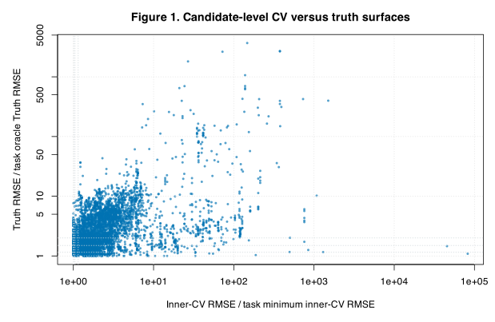
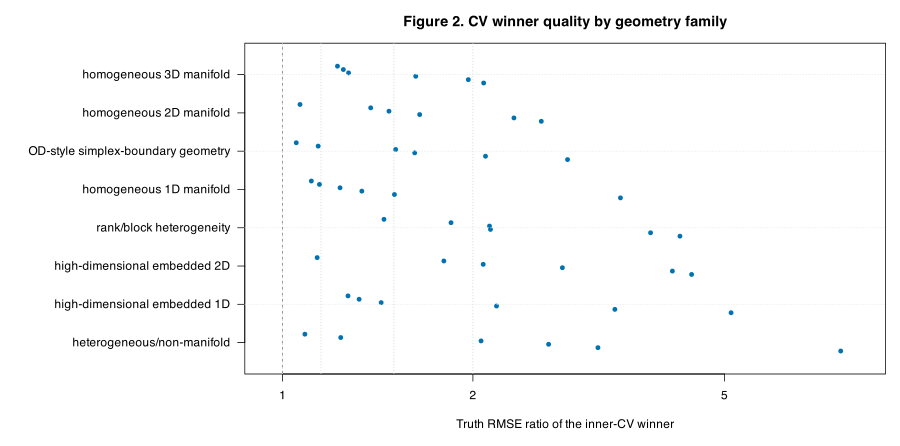
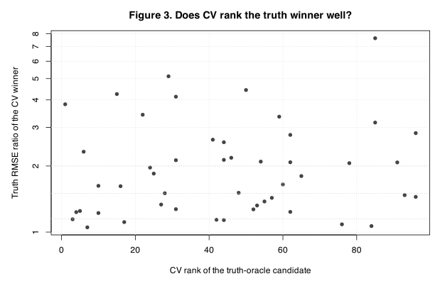
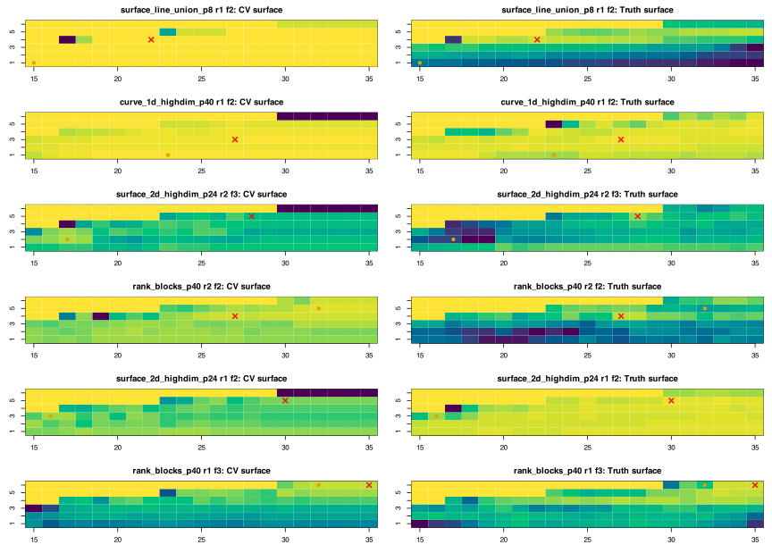

CSD-deg2 CSD8 Candidate-Level CV Surface Audit
Purpose
CSD7 showed that some large gaps are not sparse-grid misses: even the full numeric \\((k,d)\\) selector can choose a candidate far from the truth-facing oracle. CSD8 adds the missing evidence by saving candidate-level inner-CV scores and joining them to the CSD6 truth-facing grid.
For each task \\(s\\) and candidate \\((k,d)\\), this report compares the inner-CV score \\(\widehat R^{\mathrm{CV}}_s(k,d)\\) with the truth-facing score \\(R_s(k,d)\\). We use two task-normalized ratios:
\\[ C_s(k,d)=\frac{\widehat R^{\mathrm{CV}}_s(k,d)} {\min_{k,d}\widehat R^{\mathrm{CV}}_s(k,d)}, \qquad T_s(k,d)=\frac{R_s(k,d)}{\min_{k,d}R_s(k,d)}. \\]If CV is a good selector, candidates with small \\(C_s(k,d)\\) should also have small \\(T_s(k,d)\\). In particular, the CV winner should have \\(T_s\\) close to one, and the truth winner should have a good CV rank.
| metric | value |
|---|---|
| outer tasks | 48 |
| candidate rows | 4848 |
| large CV-winner misses | 29 |
| median CV-winner truth ratio | 1.723 |
| median CV rank of truth winner | 44 |
Candidate-Level Alignment
Every point in the next figure is one candidate from one outer task. The x-axis is the candidate CV score relative to the task-best CV score; the y-axis is the candidate Truth RMSE relative to the task-best Truth RMSE.

Figure 1. Candidate-level CV versus truth alignment. Points near the lower-left corner are good under both criteria. Points near the left but high on the y-axis are dangerous: CV views them as near-optimal, but truth RMSE is much worse than the oracle. Both axes are log-scaled because the disagreement can span orders of magnitude.
CV Winner Quality
The next figure asks a direct selector question: if we choose the candidate with the smallest inner-CV RMSE, how far is its truth RMSE from the truth-facing oracle?

Figure 2. Truth RMSE ratio of the inner-CV winner by geometry family. Values near one mean CV selected a candidate close to the truth-facing oracle. Values above \(1.5\) or \(2\) are the cases where CV itself is the main suspect, because the full numeric grid contained a much better truth-facing candidate.
Does CV Recognize The Truth Winner?
For each task, the truth winner is the candidate with the smallest \\(R_s(k,d)\\). CSD8 records its rank under the inner-CV score. A small rank means CV saw the truth winner as competitive; a large rank means the truth winner looked bad under CV.

Figure 3. CV rank of the truth-oracle candidate versus the truth ratio of the CV winner. The most concerning tasks are in the upper-right: CV selects a poor truth candidate and also ranks the truth winner poorly.
Surface Pairs
The paired heatmaps show why candidate-level persistence matters. In each row, the left panel is the task-normalized CV surface \(C_s(k,d)\), and the right panel is the task-normalized truth surface \(T_s(k,d)\). The orange dot marks the CV winner; the red cross marks the truth winner.

Figure 4. Representative CV/truth surface pairs for the largest CSD8 CV-winner misses. A good selector would place the orange dot close to the dark region of the truth panel. Separated orange and red marks indicate that the CV surface and truth surface disagree about the best \\((k,d)\\) region.
Largest Task-Level Misses
The table lists tasks where the CV winner has the largest truth RMSE ratio.
The columns near.cv.05 and near.truth.15 count how many
candidates are within 5% of the best CV score and within 15% of the truth
oracle, respectively.
| dataset.id | dataset.family | repetition | outer.fold | cv.winner.k | cv.winner.d | truth.winner.k | truth.winner.d | cv.winner.truth.ratio | truth.winner.cv.rank | cv.truth.rank.spearman | near.cv.05 | near.truth.15 |
|---|---|---|---|---|---|---|---|---|---|---|---|---|
| surface_line_union_p8 | heterogeneous/non-manifold | 1 | 2 | 15 | 1 | 22 | 4 | 7.637 | 85 | -0.6837 | 2 | 3 |
| curve_1d_highdim_p40 | high-dimensional embedded 1D | 1 | 2 | 23 | 1 | 27 | 3 | 5.122 | 29 | 0.2069 | 11 | 4 |
| surface_2d_highdim_p24 | high-dimensional embedded 2D | 2 | 3 | 17 | 2 | 28 | 5 | 4.436 | 50 | 0.08224 | 1 | 1 |
| rank_blocks_p40 | rank/block heterogeneity | 2 | 2 | 32 | 5 | 27 | 4 | 4.251 | 15 | 0.2455 | 4 | 2 |
| surface_2d_highdim_p24 | high-dimensional embedded 2D | 1 | 2 | 16 | 3 | 30 | 5 | 4.136 | 31 | 0.2911 | 3 | 2 |
| rank_blocks_p40 | rank/block heterogeneity | 1 | 3 | 32 | 6 | 35 | 6 | 3.82 | 1 | 0.6258 | 4 | 4 |
| curve_1d_embedded_p8 | homogeneous 1D manifold | 2 | 1 | 15 | 2 | 26 | 2 | 3.423 | 22 | 0.01454 | 2 | 2 |
| curve_1d_highdim_p40 | high-dimensional embedded 1D | 2 | 3 | 28 | 1 | 31 | 3 | 3.354 | 59 | 0.3511 | 8 | 2 |
| surface_line_union_p8 | heterogeneous/non-manifold | 2 | 2 | 20 | 3 | 35 | 5 | 3.154 | 85 | 0.3408 | 2 | 3 |
| simplex_faces_p8 | OD-style simplex-boundary geometry | 2 | 2 | 28 | 4 | 25 | 5 | 2.823 | 96 | 0.03012 | 1 | 3 |
| surface_2d_highdim_p24 | high-dimensional embedded 2D | 1 | 1 | 22 | 4 | 30 | 4 | 2.771 | 62 | 0.2765 | 1 | 2 |
| surface_line_union_p8 | heterogeneous/non-manifold | 2 | 1 | 15 | 3 | 26 | 4 | 2.635 | 41 | 0.09632 | 1 | 4 |
What We Learned
CSD8 directly tests the hypothesis raised by CSD7. If the large regret were only a sparse-grid problem, the full-grid CV winner would usually be close to the truth-facing oracle. The saved candidate-level surfaces show whether this is true task by task. Large CV-winner truth ratios, high CV ranks for the truth winner, or low rank correlations all point toward a selection-score mismatch: the inner-CV surface is not reliably identifying the truth-good region.
The practical next step should be based on these diagnostics. If most large misses have many near-tied CV candidates, repeated CV or one-standard-error selection is natural. If misses concentrate near boundaries, a boundary-aware or staged rule is natural. If CV and truth surfaces are systematically misaligned in particular geometry families, then the selector needs a geometry-stratified policy rather than a single global rule.
Reproducibility
- CSD8 run command:
Rscript dev/methods/lps/ci/csd8_candidate_cv_surface_audit_run.R - CSD8 render command:
Rscript dev/methods/lps/ci/csd8_candidate_cv_surface_audit_render.R --report-dir=/Users/pgajer/current_projects/geosmooth/dev/methods/lps/reports/csd8_deg2_candidate_cv_surface_audit_20260709 - Candidate inner-CV scores: csd8_candidate_inner_cv_scores.csv
- Joined CV/truth surface: csd8_joined_cv_truth_surface.csv
- Task alignment summary: csd8_task_cv_truth_alignment.csv
- Family alignment summary: csd8_family_cv_truth_alignment.csv